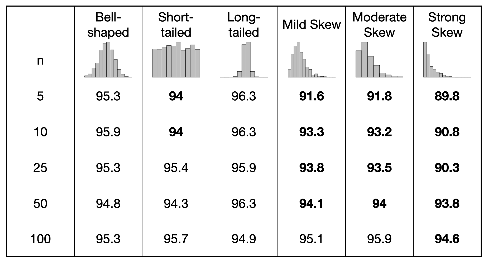
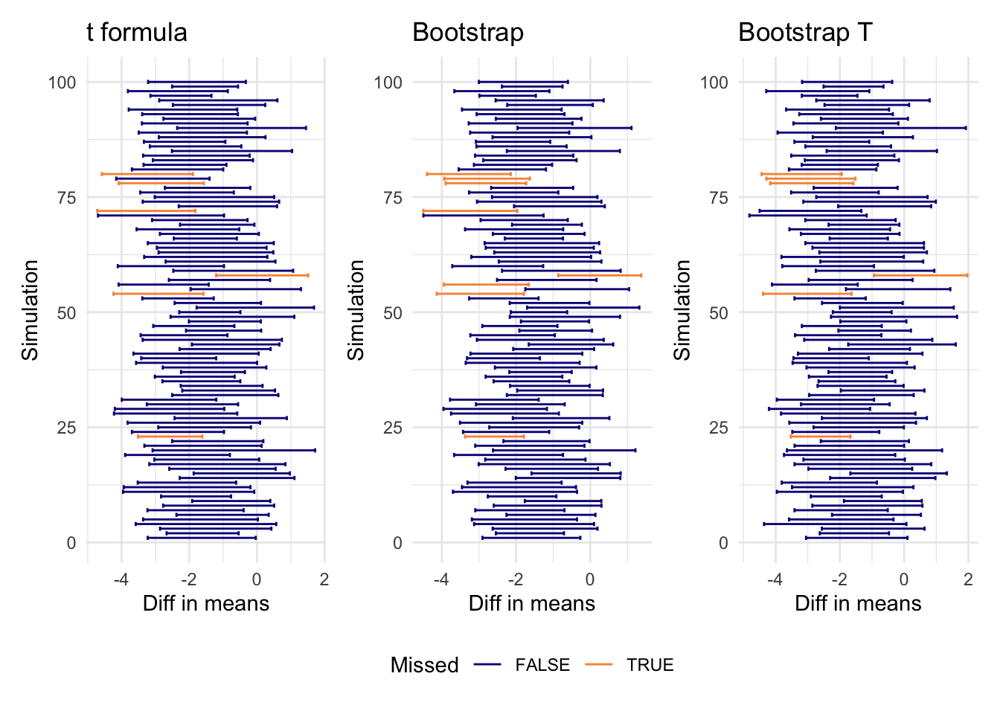

library(tidyverse)
library(patchwork)17: Comparing two sample confidence interval procedures
Recall the coverage simulation results that we looked at for the 1-sample t procedure:

Your task for today is to replicate the simulation study for the following settings:
- Both bell-shaped (e.g. Normal, t)
- Both short-tailed (e.g. Uniform)
- Both skewed left (e.g. Beta(5,2))
- Both skewed right (e.g. Exponential)
- One skewed left, one skewed right
You should also assess how the sample size impacts the coverage:
- n = 10
- n = 30
- n = 100
Simulation Template
Setup
# Sample sizes for x and y
n1 <- 10
n2 <- 10
N_sim <- 100 # keep this small-ish for efficiency. This is the number of times you will draw new samples
N_boot <- 1000 # keep this smaller than usual as well. This is the number of bootstrap simulations you will run for each pair of samples
# Storage for results
results <- data.frame(
t_lower = numeric(N_sim),
t_upper = numeric(N_sim),
boott_lower = numeric(N_sim),
boott_upper = numeric(N_sim),
boot_lower = numeric(N_sim),
boot_upper = numeric(N_sim)
)Run Simulation
set.seed(050825)
for(i in 1:N_sim){
# Step 1: draw random samples. This should be the only thing you change within this chunk between the simulations
x <- rnorm(n1, mean = 0, sd = 1)
y <- rnorm(n2, mean = 1.5, sd = 2)
true_diff <- -1.5 # this is the true difference in the population means (x - y)
# Step 2: compute formula t confidence interval
t_ci <- t.test(x, y, conf.level = .95)$conf
results$t_lower[i] <- t_ci[1]
results$t_upper[i] <- t_ci[2]
# Step 3: run bootstrap for each sample; store bootstrap means and bootstrap t's
diff_mean <- numeric(N_boot) # storage for bootstrap differences
t_boot <- numeric(N_boot) # storage for bootstrap differences
for(j in 1:N_boot){
x_boot <- sample(x, n1, replace = TRUE)
y_boot <- sample(y, n2, replace = TRUE)
diff_mean[j] <- mean(x_boot) - mean(y_boot)
t_boot[j] <- ((mean(x_boot) - mean(y_boot)) - (mean(x) - mean(y)))/sqrt(var(x_boot)/n1 + var(y_boot)/n2)
}
results$boot_lower[i] <- quantile(diff_mean, prob = c(.025))
results$boot_upper[i] <- quantile(diff_mean, prob = c(.975))
results$boott_lower[i] <- (mean(x)- mean(y)) - quantile(t_boot, .975)*sqrt(var(x)/n1 + var(y)/n2)
results$boott_upper[i] <- (mean(x)- mean(y)) - quantile(t_boot, .025)*sqrt(var(x)/n1 + var(y)/n2)
}Analyze results: find coverage rates
mean(true_diff < results$t_lower) # percent of times that t CI is too high[1] 0.01mean(true_diff > results$t_upper) # percent of times that t CI is too low[1] 0.05mean(true_diff < results$boot_lower) # percent of times that bootstrap CI is too high[1] 0.01mean(true_diff > results$boot_upper) # percent of times that bootstrap CI is too low[1] 0.07mean(true_diff < results$boott_lower) # percent of times that bootstrap T CI is too high[1] 0.01mean(true_diff > results$boott_upper) # percent of times that bootstrap T CI is too low[1] 0.05Analyze results: graph
Note: if you use >100 samples, this plot will probably not look very nice!
p1 <- ggplot(results, aes(xmin = t_lower, xmax = t_upper, y = 1:N_sim, col = (true_diff < t_lower )| (true_diff > t_upper))) +
geom_errorbarh() +
labs(title = "t formula",
col = "Missed",
y = "Simulation",
x = "Diff in means") +
scale_color_viridis_d(end = .75, option = "plasma")
p2 <- ggplot(results, aes(xmin = boot_lower, xmax = boot_upper, y = 1:N_sim, col = (true_diff < boot_lower )| (true_diff > boot_upper))) +
geom_errorbarh() +
labs(title = "Bootstrap",
col = "Missed",
y = "Simulation",
x = "Diff in means") +
scale_color_viridis_d(end = .75, option = "plasma")
p3 <- ggplot(results, aes(xmin = boott_lower, xmax = boott_upper, y = 1:N_sim, col = (true_diff < boott_lower )| (true_diff > boott_upper))) +
geom_errorbarh() +
labs(title = "Bootstrap T",
col = "Missed",
y = "Simulation",
x = "Diff in means") +
scale_color_viridis_d(end = .75, option = "plasma")
p1 + p2 + p3 + plot_layout(guides = "collect") & theme_minimal() & theme(legend.position = "bottom")